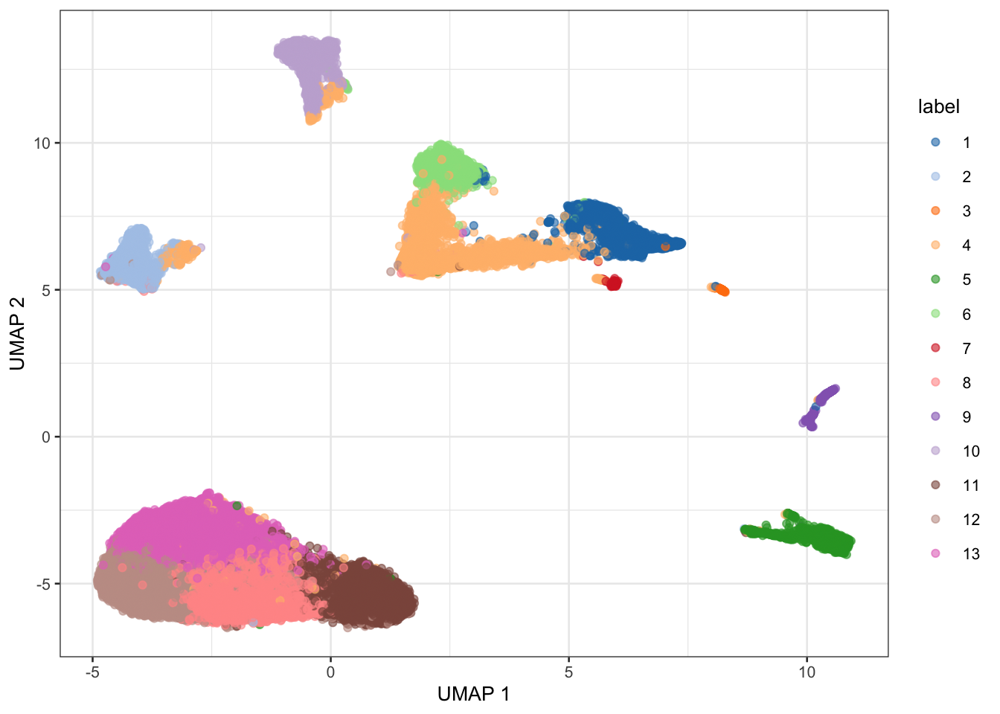

6 Overview of single-cell analysis in R/Bioconductor
6.1 Part 1
6.1.1 Learning objectives
- Understand how count matrices are created from single-cell experimental platforms and protocols
- Recognize which basic principles and concepts were transferred from bulk to single-cell data analyses
- Understand the key differences between bulk and single-cell data
- Define what is a “Unique Molecular Identifier”
- Define multiplexing (and demultiplexing)
- Overview of basics in single-cell data analyses including quality control, normalization, feature selection, dimensionality reduction, and clustering
6.1.2 Materials
We will go through the slides available here:
6.2 Part 2
6.2.1 Learning objectives
- Be able to create a single-cell count matrix and read it into R
- Recognize and define the
SingleCellExperimentS4 class in R/Bioconductor to store single-cell data
6.2.2 Overview
NGS data from scRNA-seq experiments must be converted into a matrix of expression values.
This is usually a count matrix containing the number of reads (or UMIs) mapped to each gene (row) in each cell (column). Once this quantification is complete, we can proceed with our downstream statistical analyses in R.
Constructing a count matrix from raw scRNA-seq data requires some thought as the term “single-cell RNA-seq” encompasses a variety of different experimental protocols. This includes
- droplet-based protocols like 10X Genomics, inDrop and Drop-seq
- plate-based protocols with UMIs like CEL-seq(2) and MARS-seq
- plate-based protocols with reads (mostly Smart-seq2)
- others like sciRNA-seq, etc
Each approach requires a different processing pipeline to deal with cell demultiplexing and UMI deduplication (if applicable). Here, we will briefly describe some of the methods used to generate a count matrix and read it into R.
6.2.3 Creating a count matrix
As mentioned above, the exact procedure for quantifying expression depends on the technology involved:
- For 10X Genomics data, the
Cellrangersoftware suite (Zheng et al. 2017) provides a custom pipeline to obtain a count matrix. This uses STAR to align reads to the reference genome and then counts the number of unique UMIs mapped to each gene. - Alternatively, pseudo-alignment methods such as
alevin(Srivastava et al. 2019) can be used to obtain a count matrix from the same data. This avoids the need for explicit alignment, which reduces the compute time and memory usage. - For other highly multiplexed protocols, the
scPipepackage provides a more general pipeline for processing scRNA-seq data. This uses the Rsubread aligner to align reads and then counts reads or UMIs per gene. - For CEL-seq or CEL-seq2 data, the
scruffpackage provides a dedicated pipeline for quantification. - For read-based protocols, we can generally re-use the same pipelines for processing bulk RNA-seq data (e.g. Subread, RSEM, salmon)
- For any data involving spike-in transcripts, the spike-in sequences should be included as part of the reference genome during alignment and quantification.
In all cases, the identity of the genes in the count matrix should be defined with standard identifiers from Ensembl or Entrez. These provide an unambiguous mapping between each row of the matrix and the corresponding gene.
In contrast, a single gene symbol may be used by multiple loci, or the mapping between symbols and genes may change over time, e.g., if the gene is renamed.
This makes it difficult to re-use the count matrix as we cannot be confident in the meaning of the symbols.
(Of course, identifiers can be easily converted to gene symbols later on in the analysis. This is the recommended approach as it allows us to document how the conversion was performed and to backtrack to the stable identifiers if the symbols are ambiguous.)
6.2.4 SingleCellExperiment Class
One of the main strengths of the Bioconductor project lies in the use of a common data infrastructure that powers interoperability across packages.
Users should be able to analyze their data using functions from different Bioconductor packages without the need to convert between formats.
To this end, the SingleCellExperiment class (from the SingleCellExperiment package) serves as the common currency for data exchange across 70+ single-cell-related Bioconductor packages.
This class implements a data structure that stores all aspects of our single-cell data - gene-by-cell expression data, per-cell metadata and per-gene annotation - and manipulate them in a synchronized manner.
[Amezquita et al. 2019 (https://doi.org/10.1101/590562)]
- Each piece of (meta)data in the
SingleCellExperimentis represented by a separate “slot”.
(This terminology comes from the S4 class system, but that’s not important right now).
If we imagine the SingleCellExperiment object to be a cargo ship, the slots can be thought of as individual cargo boxes with different contents, e.g., certain slots expect numeric matrices whereas others may expect data frames.
If you want to know more about the available slots, their expected formats, and how we can interact with them, check out this chapter.
SingleCellExperiment Example
Let’s show you what a SingleCellExperiment (or sce for short) looks like.
sceclass: SingleCellExperiment
dim: 20006 3005
metadata(0):
assays(1): counts
rownames(20006): Tspan12 Tshz1 ... mt-Rnr1 mt-Nd4l
rowData names(1): featureType
colnames(3005): 1772071015_C02 1772071017_G12 ... 1772066098_A12
1772058148_F03
colData names(10): tissue group # ... level1class level2class
reducedDimNames(0):
mainExpName: endogenous
altExpNames(2): ERCC repeatThis SingleCellExperiment object has 20006 genes and 3005 cells.
We can pull out the counts matrix with the counts() function and the corresponding rowData() and colData():
counts(sce)[1:5, 1:5] 1772071015_C02 1772071017_G12 1772071017_A05 1772071014_B06
Tspan12 0 0 0 3
Tshz1 3 1 0 2
Fnbp1l 3 1 6 4
Adamts15 0 0 0 0
Cldn12 1 1 1 0
1772067065_H06
Tspan12 0
Tshz1 2
Fnbp1l 1
Adamts15 0
Cldn12 0rowData(sce)DataFrame with 20006 rows and 1 column
featureType
<character>
Tspan12 endogenous
Tshz1 endogenous
Fnbp1l endogenous
Adamts15 endogenous
Cldn12 endogenous
... ...
mt-Co2 mito
mt-Co1 mito
mt-Rnr2 mito
mt-Rnr1 mito
mt-Nd4l mitocolData(sce)DataFrame with 3005 rows and 10 columns
tissue group # total mRNA mol well sex
<character> <numeric> <numeric> <numeric> <numeric>
1772071015_C02 sscortex 1 1221 3 3
1772071017_G12 sscortex 1 1231 95 1
1772071017_A05 sscortex 1 1652 27 1
1772071014_B06 sscortex 1 1696 37 3
1772067065_H06 sscortex 1 1219 43 3
... ... ... ... ... ...
1772067059_B04 ca1hippocampus 9 1997 19 1
1772066097_D04 ca1hippocampus 9 1415 21 1
1772063068_D01 sscortex 9 1876 34 3
1772066098_A12 ca1hippocampus 9 1546 88 1
1772058148_F03 sscortex 9 1970 15 3
age diameter cell_id level1class level2class
<numeric> <numeric> <character> <character> <character>
1772071015_C02 2 1 1772071015_C02 interneurons Int10
1772071017_G12 1 353 1772071017_G12 interneurons Int10
1772071017_A05 1 13 1772071017_A05 interneurons Int6
1772071014_B06 2 19 1772071014_B06 interneurons Int10
1772067065_H06 6 12 1772067065_H06 interneurons Int9
... ... ... ... ... ...
1772067059_B04 4 382 1772067059_B04 endothelial-mural Peric
1772066097_D04 7 12 1772066097_D04 endothelial-mural Vsmc
1772063068_D01 7 268 1772063068_D01 endothelial-mural Vsmc
1772066098_A12 7 324 1772066098_A12 endothelial-mural Vsmc
1772058148_F03 7 6 1772058148_F03 endothelial-mural Vsmc6.3 Part 3
6.3.1 Learning objectives
- Be able to describe a standard workflow for analyzing single-cell data
- Be able to run code for a standard workflow starting from loading a
SingleCellExperimentin R and identifying clusters.
6.3.2 Overview
Here, we provide an overview of the framework of a typical scRNA-seq analysis workflow:

In the simplest case, the workflow has the following form:
- We compute quality control metrics to remove low-quality cells that would interfere with downstream analyses. These cells may have been damaged during processing or may not have been fully captured by the sequencing protocol. Common metrics includes the total counts per cell, the proportion of spike-in or mitochondrial reads and the number of detected features.
- We convert the counts into normalized expression values to eliminate cell-specific biases (e.g., in capture efficiency). This allows us to perform explicit comparisons across cells in downstream steps like clustering. We also apply a transformation, typically log, to adjust for the mean-variance relationship.
- We perform feature selection to pick a subset of interesting features for downstream analysis. This is done by modelling the variance across cells for each gene and retaining genes that are highly variable. The aim is to reduce computational overhead and noise from uninteresting genes.
- We apply dimensionality reduction to compact the data and further reduce noise. Principal components analysis is typically used to obtain an initial low-rank representation for more computational work, followed by more aggressive methods like \(t\)-stochastic neighbor embedding for visualization purposes.
- We cluster cells into groups according to similarities in their (normalized) expression profiles. This aims to obtain groupings that serve as empirical proxies for distinct biological states. We typically interpret these groupings by identifying differentially expressed marker genes between clusters.
6.3.3 Quick start (simple)
Here, we use the a droplet-based retina dataset from Macosko et al. (2015), provided in the scRNAseq package. This starts from a count matrix and finishes with clusters in preparation for biological interpretation. We also demonstrate how to identify differentially expressed genes between the clusters.
library(scRNAseq)
sce <- MacoskoRetinaData()see ?scRNAseq and browseVignettes('scRNAseq') for documentationloading from cachesee ?scRNAseq and browseVignettes('scRNAseq') for documentationloading from cache# Quality control (using mitochondrial genes).
library(scater)
is.mito <- grepl("^MT-", rownames(sce))
qcstats <- perCellQCMetrics(sce, subsets=list(Mito=is.mito))
filtered <- quickPerCellQC(qcstats, percent_subsets="subsets_Mito_percent")
sce <- sce[, !filtered$discard]
# Normalization.
sce <- logNormCounts(sce)
# Feature selection.
library(scran)
dec <- modelGeneVar(sce)
hvg <- getTopHVGs(dec, prop=0.1)
# PCA.
library(scater)
set.seed(1234)
sce <- runPCA(sce, ncomponents=25, subset_row=hvg)
# Clustering.
library(bluster)
colLabels(sce) <- clusterCells(sce, use.dimred='PCA',
BLUSPARAM=NNGraphParam(cluster.fun="louvain")) # Visualization.
sce <- runUMAP(sce, dimred = 'PCA')
plotUMAP(sce, colour_by="label")
# Marker detection (between pairs of groups)
markers <- findMarkers(sce, test.type="wilcox", direction="up", lfc=1)
length(markers)[1] 13markers[[1]]DataFrame with 24658 rows and 16 columns
Top p.value FDR summary.AUC AUC.2
<integer> <numeric> <numeric> <numeric> <numeric>
MEG3 1 0.00000e+00 0.00000e+00 0.867306 0.857315
TUBA1A 1 3.58784e-81 5.89793e-78 0.609195 0.479862
SNHG11 1 0.00000e+00 0.00000e+00 0.737419 0.747343
SYT1 2 3.51850e-268 1.08449e-264 0.786614 0.454677
CALM1 2 0.00000e+00 0.00000e+00 0.812019 0.665619
... ... ... ... ... ...
VSIG1 24654 1 1 0 0
GM16390 24655 1 1 0 0
GM25207 24656 1 1 0 0
1110059M19RIK 24657 1 1 0 0
GM20861 24658 1 1 0 0
AUC.3 AUC.4 AUC.5 AUC.6 AUC.7 AUC.8
<numeric> <numeric> <numeric> <numeric> <numeric> <numeric>
MEG3 0.6814265 0.463403 0.806255 0.478814 0.1822596 0.888640
TUBA1A 0.1162662 0.315768 0.422655 0.289249 0.4529957 0.541010
SNHG11 0.0822847 0.562474 0.741261 0.703891 0.0228628 0.742098
SYT1 0.5354274 0.317921 0.786614 0.307464 0.0591646 0.549534
CALM1 0.1535742 0.370682 0.715928 0.425258 0.0105809 0.791806
... ... ... ... ... ... ...
VSIG1 0 0 0 0 0 0
GM16390 0 0 0 0 0 0
GM25207 0 0 0 0 0 0
1110059M19RIK 0 0 0 0 0 0
GM20861 0 0 0 0 0 0
AUC.9 AUC.10 AUC.11 AUC.12 AUC.13
<numeric> <numeric> <numeric> <numeric> <numeric>
MEG3 0.850705 0.48570145 0.866916 0.873796 0.867306
TUBA1A 0.509171 0.33506617 0.552997 0.566389 0.609195
SNHG11 0.745361 0.74450392 0.737413 0.744927 0.737419
SYT1 0.823158 0.39904104 0.575948 0.584176 0.633476
CALM1 0.444978 0.00587859 0.749949 0.834002 0.812019
... ... ... ... ... ...
VSIG1 0 0 0 0 0
GM16390 0 0 0 0 0
GM25207 0 0 0 0 0
1110059M19RIK 0 0 0 0 0
GM20861 0 0 0 0 06.3.4 Quick start (multiple batches)
If you could like to see Quick Start for scRNA-seq data with multiple batches, check out this workflow:
6.4 Session Info
sessionInfo()R version 4.3.1 (2023-06-16)
Platform: aarch64-apple-darwin20 (64-bit)
Running under: macOS Sonoma 14.1.1
Matrix products: default
BLAS: /Library/Frameworks/R.framework/Versions/4.3-arm64/Resources/lib/libRblas.0.dylib
LAPACK: /Library/Frameworks/R.framework/Versions/4.3-arm64/Resources/lib/libRlapack.dylib; LAPACK version 3.11.0
locale:
[1] en_US.UTF-8/en_US.UTF-8/en_US.UTF-8/C/en_US.UTF-8/en_US.UTF-8
time zone: America/New_York
tzcode source: internal
attached base packages:
[1] stats4 stats graphics grDevices utils datasets methods
[8] base
other attached packages:
[1] bluster_1.10.0 scran_1.28.2
[3] scRNAseq_2.14.0 scater_1.28.0
[5] ggplot2_3.4.4 scuttle_1.9.4
[7] SingleCellExperiment_1.22.0 SummarizedExperiment_1.30.2
[9] Biobase_2.60.0 GenomicRanges_1.52.1
[11] GenomeInfoDb_1.36.4 IRanges_2.34.1
[13] S4Vectors_0.38.2 BiocGenerics_0.46.0
[15] MatrixGenerics_1.12.3 matrixStats_1.0.0
loaded via a namespace (and not attached):
[1] rstudioapi_0.15.0 jsonlite_1.8.7
[3] magrittr_2.0.3 ggbeeswarm_0.7.2
[5] GenomicFeatures_1.52.2 farver_2.1.1
[7] rmarkdown_2.25 BiocIO_1.10.0
[9] zlibbioc_1.46.0 vctrs_0.6.4
[11] memoise_2.0.1 Rsamtools_2.16.0
[13] DelayedMatrixStats_1.22.6 RCurl_1.98-1.12
[15] htmltools_0.5.6.1 S4Arrays_1.0.6
[17] progress_1.2.2 AnnotationHub_3.8.0
[19] curl_5.1.0 BiocNeighbors_1.18.0
[21] htmlwidgets_1.6.2 cachem_1.0.8
[23] GenomicAlignments_1.36.0 igraph_1.5.1
[25] mime_0.12 lifecycle_1.0.4
[27] pkgconfig_2.0.3 rsvd_1.0.5
[29] Matrix_1.6-1.1 R6_2.5.1
[31] fastmap_1.1.1 GenomeInfoDbData_1.2.10
[33] shiny_1.7.5.1 digest_0.6.33
[35] colorspace_2.1-0 AnnotationDbi_1.62.2
[37] dqrng_0.3.1 irlba_2.3.5.1
[39] ExperimentHub_2.8.1 RSQLite_2.3.1
[41] beachmat_2.16.0 labeling_0.4.3
[43] filelock_1.0.2 fansi_1.0.5
[45] httr_1.4.7 abind_1.4-5
[47] compiler_4.3.1 bit64_4.0.5
[49] withr_2.5.2 BiocParallel_1.34.2
[51] viridis_0.6.4 DBI_1.1.3
[53] biomaRt_2.56.1 rappdirs_0.3.3
[55] DelayedArray_0.26.7 rjson_0.2.21
[57] tools_4.3.1 vipor_0.4.5
[59] beeswarm_0.4.0 interactiveDisplayBase_1.38.0
[61] httpuv_1.6.12 glue_1.6.2
[63] restfulr_0.0.15 promises_1.2.1
[65] grid_4.3.1 cluster_2.1.4
[67] generics_0.1.3 gtable_0.3.4
[69] ensembldb_2.24.1 hms_1.1.3
[71] metapod_1.7.0 BiocSingular_1.16.0
[73] ScaledMatrix_1.8.1 xml2_1.3.5
[75] utf8_1.2.4 XVector_0.40.0
[77] RcppAnnoy_0.0.21 ggrepel_0.9.4
[79] BiocVersion_3.17.1 pillar_1.9.0
[81] stringr_1.5.1 limma_3.56.2
[83] later_1.3.1 dplyr_1.1.4
[85] BiocFileCache_2.8.0 lattice_0.22-5
[87] rtracklayer_1.60.1 bit_4.0.5
[89] tidyselect_1.2.0 locfit_1.5-9.8
[91] Biostrings_2.68.1 knitr_1.44
[93] gridExtra_2.3 ProtGenerics_1.32.0
[95] edgeR_3.42.4 xfun_0.40
[97] statmod_1.5.0 stringi_1.8.2
[99] lazyeval_0.2.2 yaml_2.3.7
[101] evaluate_0.22 codetools_0.2-19
[103] tibble_3.2.1 BiocManager_1.30.22
[105] cli_3.6.1 uwot_0.1.16
[107] xtable_1.8-4 munsell_0.5.0
[109] Rcpp_1.0.11 dbplyr_2.3.4
[111] png_0.1-8 XML_3.99-0.15
[113] parallel_4.3.1 ellipsis_0.3.2
[115] blob_1.2.4 prettyunits_1.2.0
[117] AnnotationFilter_1.24.0 sparseMatrixStats_1.12.2
[119] bitops_1.0-7 viridisLite_0.4.2
[121] scales_1.2.1 purrr_1.0.2
[123] crayon_1.5.2 rlang_1.1.2
[125] KEGGREST_1.40.1